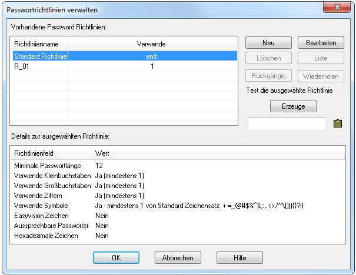
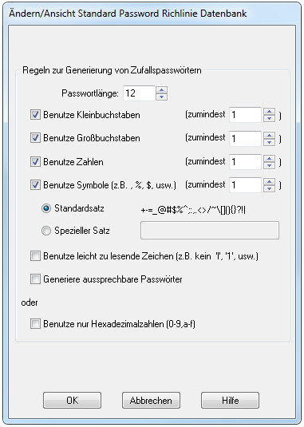
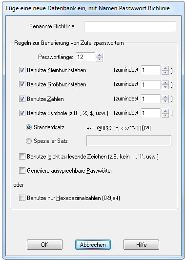
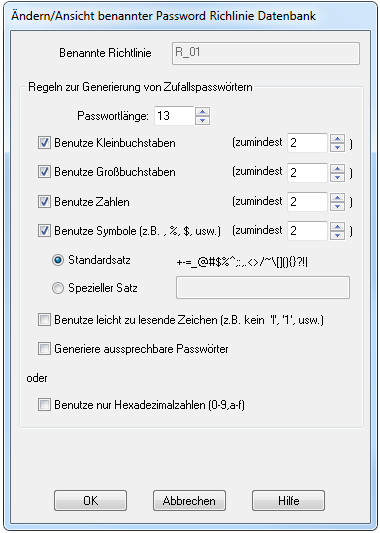

Anmerkung: Teile in blau sind (noch) nicht aus dem Englischen übersetzt.
Seit PasswordSafe V3.28 kann man Benannte Passwortrichtlinien erzeugen und bearbeiten mit dem Menü "Verwalten → Passwortrichtlinien...". Diese sind datenbankspezifisch und werden im Kopf der Datenbank abgespeichert. Dieses Menü ersetzt auch den Reiter zum Setzen der Datenbankstandardwerte im Menü "Verwalten → Optionen".
Mit diesem Dialog können Sie die aktuelle standardmäßige Passwortrichtlinie bearbeiten und neue benannte Passwortrichtlinien hinzufügen, bearbeiten und löschen. Vorsicht, es ist nicht möglich eine benannte Passwortrichtlinie zu löschen, solange mindestens ein Eintrag in der Datenbank diese verwendet. Nach der Auswahl einer Richtlinie sieht man im unteren Feld die dazugehörigen Details. Ebenso ist es möglich eine Liste der Einträge die diese Richtlinie verwenden zu sehen, mit einem Klick auf die Taste Liste. Zurück geht es mit einem Klick auf die Taste Details. Wenn die Liste der Einträge angezeigt wird, kommt man mit einem Doppelklick auf einem Eintrag zum Bearbeiten / Anzeigen dieses Eintrages.
Wenn die standard Passwortrichtlinie ausgewählt ist, benutzt man die Taste Bearbeiten um die Werte zu ändern. Der nachstehender Dialog wird angezeigt (er ersetzt die frühere Funktion im Menü "Verwalten → Optionen"). Weil diese Werte in der Datenbank abgespeichert sind, werden die Beschreibungen der Felder blau dargestellt.
Durch Betätigen der Taste Neu wird nachstehender Dialog aufgemacht, um ein neue benannte Passwortrichtlinie hinzuzufügen. Die Initialwerte werden von der standardmäßigen Passwortrichtlinie übernommen. Zusätzlich zu den normalen Überprüfungen zur Konsistenz der eingegeben Informationen, muss außerdem eine eindeutiger Name (innerhalb der Datenbank) vergeben werden. Hinweis: der Name darf nicht länger sein als 255 Zeichen.
Wenn eine benannte Passwortrichtlinie ausgewählt ist, benutzt man die Taste Bearbeiten um dessen Werte zu ändern. Der Name dieser benannten Passwortrichtlinie kann hierbei nicht verändert werden.
Die Funktionen Bearbeiten / Einfügen eines Eintrages und "Verwalten → Generiere Passwort" wurden beide erweitert um einen Eintrag die Benutzung einer benannten Richtlinie zu erlauben oder um das Generieren eines zufälligen Passwortes mithilfe einer benannten Richtlinie zu ermöglichen. Ein Grund unbenutzte benannte Richtlinien zu behalten wäre es, sie ausschließlich zum Generieren von Passwörtern einzusetzen.
Sie können die standardmäßige oder eine der benannten Passwortrichtlinien auswählen und die Taste Generiere drücken, um ein Passwort mit dieser Richlinie zu generieren. Dieses Passwort kann auch in die Zwischenablage kopiert werden.
Wenn die Datenbank im Modus Nur-Lesen ist, kann man keine neue benannte Passwortrichtlinie generieren, die standardmäßige oder eine benannte Passwortrichtlinie bearbeiten und keine unbenutzte benannte Passwortrichtlinie löschen. Eine Ansicht der standardmäßigen und der benannten Passwortrichtlinien ist jedoch möglich. Etwaige Änderungen an den Passwortrichtlinien während der Ansicht werden aber nicht abgespeichert.
Sie können die Tasten Rückgängig und Wiederholen (oder die Standards Strg+Z und Strg+Y [oder die Äquivalente, die sie mit "Verwalten → Optionen → Schnelltasten" verändert haben]) benutzen um Änderungen in diesem Dialog rückgängig zu machen, z.B. geänderte Werte in der standardmäßigen oder einer benannten Passwortrichtlinie, hinzufügen oder Löschen einer neuen bzw. unbenutzten Passwortrichtlinie. Wenn ein Änderung rückgängig gemacht wurde, können Sie das mit Wiederholen zurücksetzen, allerdings nur solange keine andere Änderung vorgenommen wurde. Änderungen werden erst nach Drücken der Taste OK -um den Dialog zu verlassen- in die Datenbank übernommen.
When a database is exported to XML (whether it is a specific subset of the entries in the database or the whole database), all the Named Password Policies in the current database are also exported. During the subsequent import of that XNL file, all the Named Pasword Policies are also imported into the current database. If a Named Password Policy of the same name already exists in the current database and it has the same policy settings as that being imported, then it will be used by any entries referencing it when they are imported. However, if the imported Named Password Policy has different policy settings to that in the database with the same name, then the policy will be imported with the words "Imported - datetime" appended to its name (where the 'datetime' is the date/time of the Import) and all imported entries refering to it will now reference the newly named policy.
When importing a XML file, if the any record references a Named Password Policy that does not exist in the current database (or in the XML file being imported), then the entry will be changed to use the current database default policy. Warning messages will be placed in the Import log show which entries have been affected.
When exporting to a Text file, the name of of any referenced Named Password Policy is also exported. However, there is no facility to also export the values contained in these Named Password Policies.
Due to the above restriction, when importing a Text file, if the any record references a Named Password Policy that does not exist in the current database, then the entry will be changed to use the current database default policy. Warning messages will be placed in the Import log show which entries have been affected.
When a whole or subset of a database is merged into the current database, any Named Password Policy referenced by the entries being merged will be brought across from the source database. If a Named Password Policy of the same name already exists in the current database and it has the same policy settings as that being copied across, then it will be used by any entries referencing is are merged. However, if the imported Named Password Policy has different policy settings to that in the database with the same name, then it will be imported with the word "Merged - datetime" appended to its name (where the 'datetime' is the date/time of the Merge) and all entries refering to it will now reference the newly named policy.
Similarly, when one or more entries are dragged from another database and dropped into the current database except "Drag - datetime" will be used to make the Named Password Policy unique.